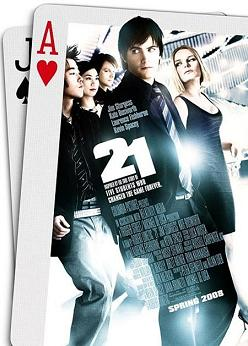

The solo player's problem: small bets followed by sudden huge bets looks suspicious.
Solution: team play.
👀
Spotters
Sit at different tables.
Minimum bets.
Keep the count.
📡
Signal
Takes off glasses.
Places chips
in a certain way.
🎰
Big player
Sits down.
Makes big bets.
Looks like a tourist.
Over a few years: millions of dollars. The book "Bringing Down the House." The film "21."
There are two reasons. Can anyone name them?
More tables
5 spotters = 5 tables = 5 times more favorable moments
Cover
No obvious "small → small → HUGE" pattern at one table
↓ show answer